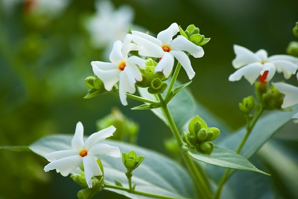

Parijat is one of the beautiful and mysterious plants whose flowers fall on the ground after blooming. The flowers bloom at night and drop down from the branches at the first rays of light. These fragrant flowers spread fragrance in the surrounding area with an intensely sweet floral aroma.Parijat tree is famous for its harsingar or night jasmine flowers. The word Parijat means ‘descended from or celestial’.

Kaveri always wanted to grow a Parijat tree in the limited space in front of her villa in Bengaluru to reminisce about her childhood. “I also love the mild fragrance of the flower. They are so delicate. I often pluck the buds and keep them in an uruli to beautify our living room,” she says. The 47-year-old gardener planted Parijat four years ago in her front garden. It took some time to root and it was last year that the tree first bloomed.
Here are some quick tips from Kaveri to grow a healthy Parijat tree:Pick a well-lit place in your garden that receives sunlight for at least six hours a day. Parijat, similar to bougainvillaea, hates the shade.Visit your nearby garden nursery to collect a healthy Parijat sapling. You can even ask for one from your gardener friends.The plant generally needs not much care, but it is good if you prune it once a year, during summer. Cut the leaves and branches completely so that it grows back into a healthy plant.
Do not overwater the plant. Even during summer, water it twice or thrice a day.Be patient as the growth of this plant takes time. You can’t see the flowers blooming within a month like rose saplings.I used compost manure once in a while to fasten the growth of the plant. If that’s not available, go for any store-bought manure.If you are planning to make a garland or beautify any space using this flower, make sure to pluck the buds, as the flowers are very delicate.
The gardener also says that the leaves of Parijat have many health benefits. In Ayurveda, Parijat leaves have been used to treat different kinds of fevers, cough, arthritis and worm infestation. The leaves’ juice is bitter and works as a tonic. The flowers, on the other hand, work for gastric complaints and respiratory complaints. Kaveri, who works as a programme manager for Hewlett Packard Enterprise, enjoys her free time by gardening. She also grows malligai and amla along with some other flowering plants